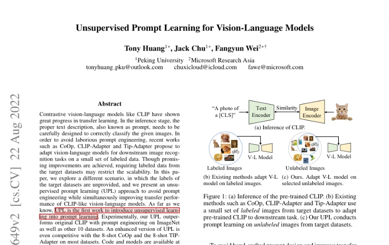
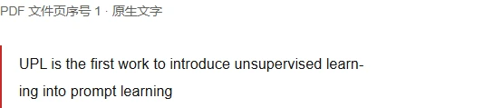
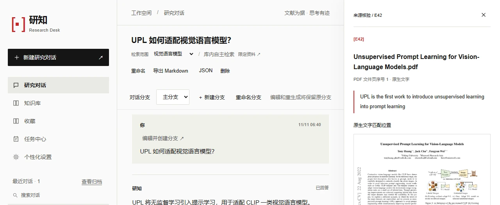
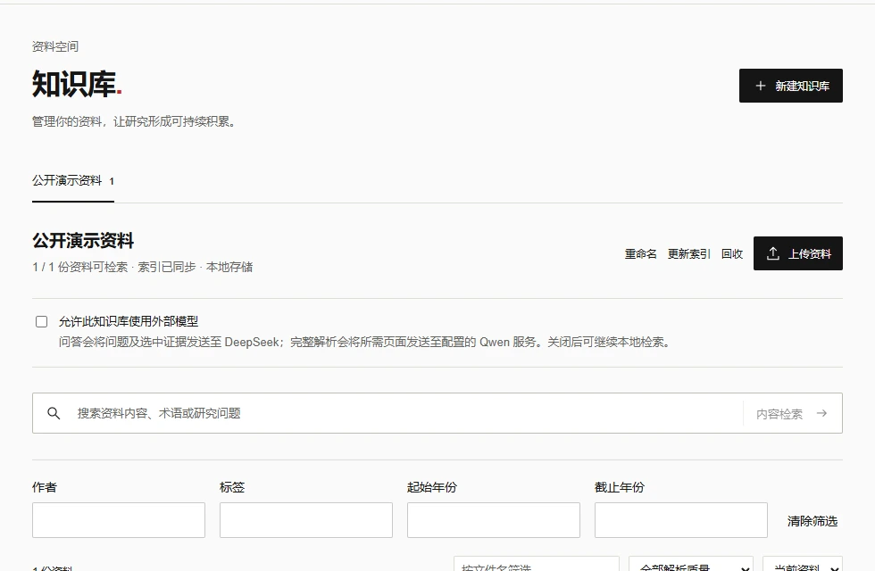
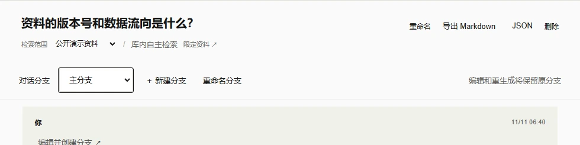

无监督提示学习（UPL）
UPL is the first work to introduce unsupervised learning into prompt learning


回到原文研知是 Windows 上的本地文献工作台。整理 Zotero 与 PDF，向自己的知识库提问，把回答逐条核对到论文原文。
体验引用定位
以一篇视觉语言模型论文为例，从回答中的引用回到论文第一页。
打开 E42 可查看引句和它在 PDF 上的位置。
UPL is the first work to introduce unsupervised learning into prompt learning

把资料整理、限定范围的问答、证据复核和研究记录放在同一个工作台。
按课题建立知识库，导入 PDF、Word、PPT 或图片。通过 Zotero JSON 和本地附件目录预览增量同步，按作者、年份、标签或指定文档限定问答范围。

可先在库内做本地内容检索，也可请研知归纳多篇文献。流式草稿和最终回答分别展示，最终引用可打开原句、页码和高亮位置。支持性检查强度可按会话设置。
从当前讨论分支追问，保留原有回答。可收藏回答与引用、归档对话，或导出 Markdown 和 JSON，带走研究记录。

从文档入库到引用定位，四个组件共同保留回答与原文的联系。
doc2md
将输入转换为 Markdown 和结构化片段，保留页码与来源信息。
DocBase
按库和资料范围检索。工作台当前使用 BM25Plus，索引按版本保存。
DocAgent
调用检索与上下文工具，组织带引文的回答，并校验引句与来源文本。
ResearchDesk
按证据编号打开页码、原句和页面定位，支持回看历史引用。
准备 Conda 和 Node.js 22，在项目根目录的命令提示符中运行：
setup.cmd
start.cmd启动后，在浏览器打开本机地址 127.0.0.1:8765。
在知识库中添加包含附件路径的 Zotero 导出 JSON，填写本机附件 storage 目录。预览新增、变更和重复项后，再应用同步。
知识库和索引保存在本机。使用模型问答时，先在「个性化设置」配置模型与 Key，再为目标库启用外部模型处理。问题和选中的证据会发送给所配置的服务。